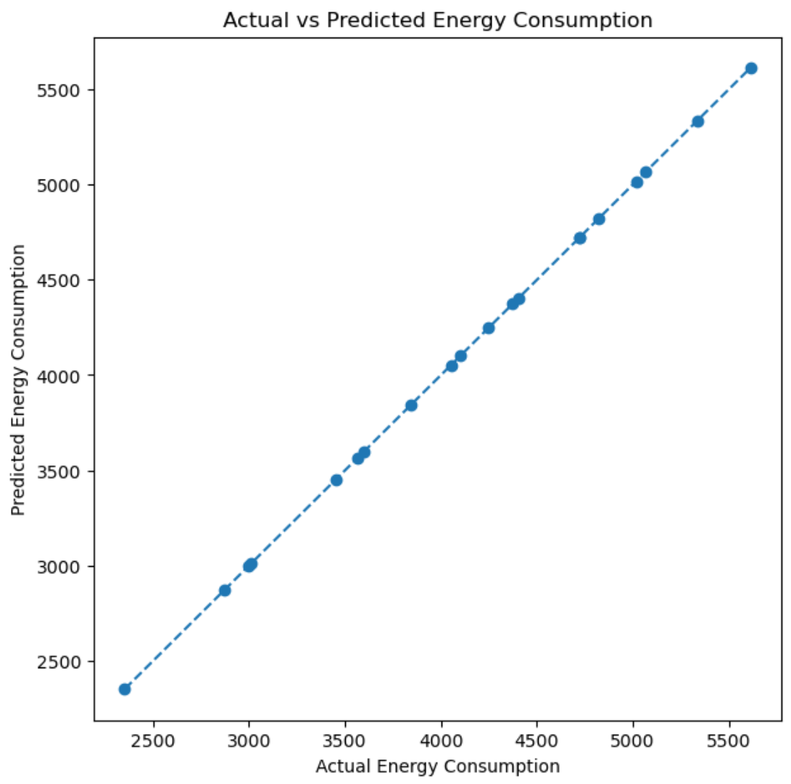
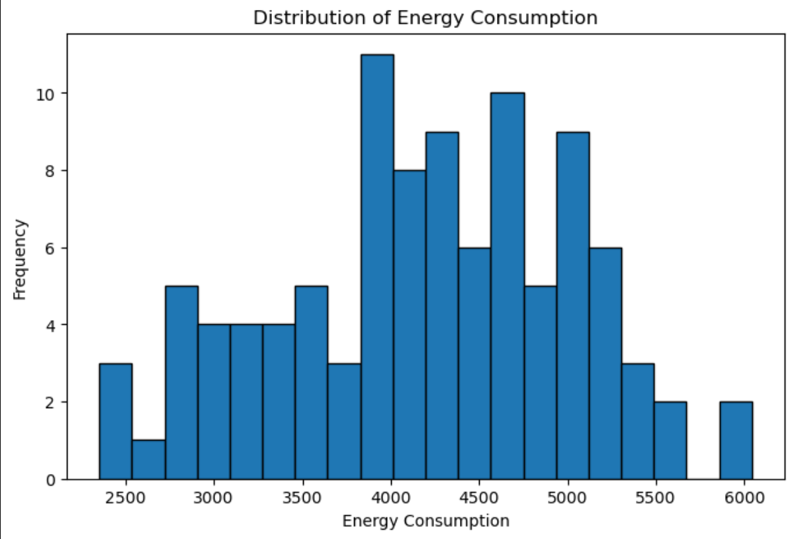

Building Energy Consumption Prediction
Machine Learning • Multiple Linear Regression • Energy Analytics

This project uses machine learning to predict the energy consumption of buildings based on characteristics such as square footage, number of occupants, appliances used, average temperature, building type, and whether the observation occurs on a weekday or weekend. The project was created as a hands-on exploration of the complete regression workflow, including data exploration, categorical encoding, train/test splitting, model training, coefficient interpretation, baseline comparison, and model evaluation.
TL;DR
A multiple linear regression model that predicts building energy consumption using structural, occupancy, environmental, and categorical features.
My Role
Built the complete machine learning workflow: data exploration → categorical encoding → train/test split → linear regression → coefficient interpretation → model evaluation → baseline comparison.
Tech
Links
Overview
The dataset contains 100 building records. The target variable is Energy Consumption, while the input features describe the building, its occupancy, environmental conditions, and the day type. The goal was not only to produce predictions but also to understand how each feature contributes to the model and how categorical variables should be represented correctly before training a linear regression model.
Features Used
- Square Footage: Size of the building.
- Number of Occupants: Number of people occupying the building.
- Appliances Used: Number of appliances operating within the building.
- Average Temperature: Environmental temperature associated with the observation.
- Building Type: Categorical feature representing the building category.
- Day of Week: Indicates whether the observation occurred on a weekday or weekend.
Workflow
- Data exploration: Inspected the dataset structure, column data types, missing values, distributions, and relationships between variables.
- Feature / target separation: Energy Consumption was selected as the prediction target, while the remaining columns were used as input features.
- Categorical preprocessing: Converted categorical values into numerical representations suitable for linear regression.
- Train/test split: Used an 80/20 split with a fixed random state so model performance could be evaluated on unseen data.
- Model training: Trained a multiple linear regression model using scikit-learn.
- Evaluation: Measured performance using Mean Squared Error, Mean Absolute Error, and R².
- Baseline comparison: Compared the trained model against a simple predictor that always returns the average training-set energy consumption.
Categorical Feature Encoding
Two features in the dataset are categorical: Building Type and Day of Week.
Day of Week
Because this feature contains only two possible values, it was mapped directly into a binary numerical representation.
df["Day of Week"] = df["Day of Week"].map({
"Weekday": 0,
"Weekend": 1
})Building Type
I initially experimented with category codes, but assigning values such as 0, 1, and 2 can introduce a false numerical relationship between categories. Instead, the building type was converted using one-hot encoding.
df = pd.get_dummies(
df,
columns=["Building Type"],
drop_first=True,
dtype=int
)
Using drop_first=True removes one dummy column
and uses that category as the reference category, avoiding
redundant features.
Linear Regression Model
The dataset was split into training and testing subsets, with 20% of the data reserved for testing.
X_train, X_test, y_train, y_test = train_test_split(
X,
y,
test_size=0.2,
random_state=33
)A scikit-learn Linear Regression model was then trained using the training dataset.
model = LinearRegression()
model.fit(X_train, y_train)
prediction = model.predict(X_test)Interpreting Model Coefficients
One of the useful properties of linear regression is that the learned coefficients provide a direct way to examine how each feature influences the prediction.
The model learned approximate relationships such as:
- Square Footage: approximately +0.05 energy units per additional square foot.
- Number of Occupants: approximately +10 units per additional occupant.
- Appliances Used: approximately +20 units per additional appliance.
- Average Temperature: approximately -5 units for each degree increase.
- Day of Week: approximately -50 units when moving from weekday to weekend.
The unusually clean coefficients suggest that the dataset follows a very strong underlying linear relationship.
Model Evaluation
Model performance was evaluated using three common regression metrics.
MSE
≈ 0.00029
MAE
≈ 0.0147
R²
≈ 1.00
The model fits this dataset extremely closely. An R² value near 1 means that almost all of the variation in energy consumption in the test dataset is explained by the linear regression model. However, this result should not be interpreted as evidence that linear regression would perform equally well on real-world energy datasets. The data used here appears to contain an almost perfectly linear relationship.
Baseline Comparison
To make the model evaluation more meaningful, I compared it against a simple baseline. The baseline predicts the mean energy consumption of the training dataset for every test observation.
baseline_value = y_train.mean()
baseline_predictions = [
baseline_value
] * len(y_test)Baseline MSE
≈ 762,800
Linear Regression MSE
≈ 0.00029
The large difference between the baseline and the trained model demonstrates that the selected features contain a very strong predictive signal within this dataset.
Media


What I Learned
- Exploring datasets using Pandas before model training.
- Separating predictor variables from the prediction target.
- Handling categorical data for regression models.
- The difference between binary encoding and one-hot encoding.
- Why arbitrary numerical category codes can introduce misleading relationships.
- Creating reproducible train/test splits.
- Building and evaluating multiple linear regression models.
- Interpreting regression coefficients.
- Understanding MAE, MSE, and R².
- Comparing a trained model against a simple baseline.
- Recognizing that unusually perfect performance should be investigated rather than automatically treated as proof of a great model.
Repository
View the notebook, dataset, analysis, and source code on GitHub: Building Energy Consumption Prediction